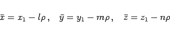
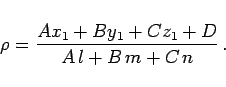
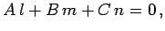
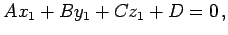
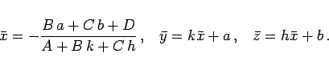
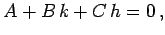
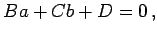
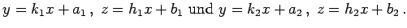
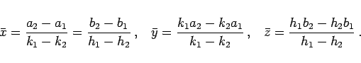
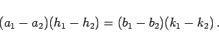

Inhalt Index DeskTop Bronstein

 Geometrie Vektoralgebra und analytische Geometrie Analytische Geometrie des Raumes Gerade und Ebene im Raum
Geometrie Vektoralgebra und analytische Geometrie Analytische Geometrie des Raumes Gerade und Ebene im Raum


|  | (3.421a) |
mit
|  | (3.421b) |
Ist  dann ist die Gerade parallel zur der Ebene. Wenn außerdem
 dann liegt die Gerade in der Ebene.
|  | (3.422) |
Ist  dann ist die Gerade parallel zur Ebene. Wenn außerdem  dann liegt die Gerade in der Ebene.
Die Geraden seien gegeben durch  Der Schnittpunkt der Geraden wird mit den folgenden Formeln berechnet:
|  | (3.423a) |
Einen Schnittpunkt liefern diese Formeln nur unter der Bedingung
|  | (3.423b) |
Im entgegengesetzten Falle schneiden die Geraden einander nicht.